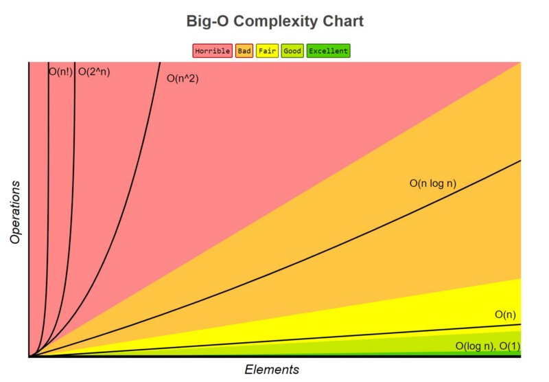
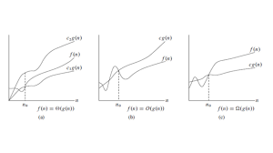

Order of Growth


Asymptotic Notations
These notations are used when the give size "n" tends to increase upto infinity and its corresponsing complexity
The order of growth of the running time of an algorithm gives gives a simple characterization of the algirthm's efficiency and also allows us to compare the relative performance of alternative algorithms.
Usually,an algorithm that is asymptotically much efficient will be the best choice for all but very small inputs.
Certain cases
Worst Case:
It gives the maximum value of the complexity function for any possible input
Best Case:
It gives the minimum value of the complexity function for any possible input
Average Case:
It gives the expected value of the complexity function . Most complicated to analyse
To analyse the algorithms., computer scientists used several symptotic nottations and important notatoins among them are :
Big-oh-notation
This gives an upper bound function .
Which indicates that the function will be the worst-case that it does not consume more than this computing time
Omega-notation
This notation is used to find the lower bound behaviorof the function.
This indicates that below this computing time the algorithm cannot perform better i.e The algorithm will take atleast this much amount of time
Theta-notation
There exists a special notation to denote for functions having the same time complexity for lower bound and upper bound and this notation is called the theta - notation whih is denoted by θ.
Comparision
